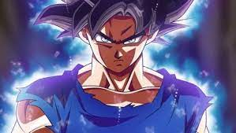

Dragon ball Z

Los guerreros Z
es un manga escrito por Akira Toriyama e ilustrado por Toyotarō.Dragon Ball Super es una medicuela de Dragon Ball y comenzó a serializarse en la revista mensual V Jump, de la editorial japonesa Shūeisha, desde el 20 de junio del 2015. Es publicado simultáneamente en inglés por Viz Media y por Shūeisha en su plataforma Manga Plus. Su trama describe las aventuras de Son Gokū , un guerrero saiyajin experto en artes marciales, dos años después de la derrota de Majin Boo.En su travesía la de el y sus compañeros ponen a prueba y mejoran sus habilidades de pelea,enfrentando oponentes y protegiendo a la Tierra de los seres que quieren conquistarla y exterminar a la humanidad. El manga tiene 100 capítulos impresos recopilados en 23 volúmenes tankōbon.3 La serie anime se emitió en Japón desde el 5 de julio de 2015 hasta el 25 de marzo de 2018. Una película secuela, Dragon Ball Super: Broly, se estrenó el 14 de diciembre de 2018. Una segunda película, Dragon Ball Super: Super Hero, se estrenó en cines nipones el 11 de junio de 2022.
los
Saga de la Batalla de los Dioses Título original: Saga del Dios de la Destrucción Bills (破壊神ビルス編 Hakai-shin Birusu-hen?). Con esta saga se da comienzo a la serie y se narra la búsqueda, por parte del Dios de la destrucción Bills (Beerus en idioma japonés) y su sirviente y mentor Whis, del Super Saiyajin Dios, que podría hacerle frente en una pelea, y así poder tener algo de diversión. Esto le lleva a la Tierra donde se encuentran Goku, Vegeta y el resto de los Guerreros Z viviendo en paz absoluta.16 Su argumento está basado en la película Dragon Ball Z: La batalla de los dioses.
Legend of Zelda: A link to the Past
Para salvar a Hyrule, Link debe rescatar a las descendientes de los Siete Sabios de las mazmorras dispersas por el Mundo Oscuro, cada uno de ellas custodiada por uno de los esbirros de Ganon. Una vez que las siete doncellas son liberadas, usan su poder para romper la barrera alrededor de la Torre de Ganon, donde Link se enfrenta a un Agahnim reencarnado, que crea dos espectros fantasmales cada uno tan poderoso como él. Después de que Link derrota a Agahnim por segunda vez, Ganon se levanta de su cuerpo, se convierte en un murciélago y vuela. Link persigue a Ganon y lo confronta dentro de la Pirámide de Poder en el centro del Mundo Oscuro. Después de una batalla que resultó en la muerte de Ganon, Link toca la Trifuerza y restaura el Mundo Oscuro y Hyrule a su estado anterior, devuelve a su tío y al sacerdote a la vida, y restaura al padre de Zelda, el verdadero.
es una serie de televisión de anime japonesa producida por Toei Animation . Parte de la franquicia de medios Dragon Ball , es la secuela de la serie de televisión Dragon Ball de 1986 y adapta los últimos 325 capítulos de la serie de manga Dragon Ball originalcreada por Akira Toriyama . La serie se emitió en Japón en Fuji TV desde abril de 1989 hasta enero de 1996 y luego fue doblada para su transmisión en al menos 81países en todo el mundo. [ 7 ] Dragon Ball Z continúa las aventuras de Son Goku en su vida adulta mientras él y sus compañeros defienden la Tierra contra villanos que incluyen extraterrestres ( Vegeta , Freezer ), androides ( Cell ) y criaturas mágicas ( Majin Buu ). Al mismo tiempo, la historia sigue la vida del hijo de Goku, Gohan , así como el desarrollo de sus rivales, Piccolo y Vegeta. Debido al éxito de la serie en Estados Unidos, los capítulos del manga que componen su historia fueron lanzados inicialmente por Viz Media bajo el título Dragon Ball Z. La popularidad del anime también ha generado varios medios y productos que han llegado a representar la mayoría del material dentro de la franquicia Dragon Ball , incluidas películas, lanzamientos de videos caseros, bandas sonoras, tarjetas coleccionables y videojuegos. Dragon Ball Z sigue siendo un ícono cultural a través de numerosas adaptaciones y relanzamientos, incluida una transmisión remasterizada titulada Dragon Ball Z Kai . [ d ] Desde entonces, a Dragon Ball Z le siguió una serie secuela titulada Dragon Ball GT (1996-1997) y una serie " intermedia " titulada Dragon Ball Super (2015-2018).
Dragon ball Z
Dragon Ball Z retoma la historia cinco años después del final de la serie Dragon Ball , con Son Goku ahora un joven adulto y padre de su hijo, Gohan . Un extraterrestre humanoide llamado Raditz llega a la Tierra en una nave espacial y rastrea a Goku, revelándole que él es su hermano mayor perdido hace mucho tiempo y que son miembros de una raza guerrera alienígena de élite casi extinta llamada Saiyans (サイヤ人, Saiya-jin ) . Goku (originalmente llamado Kakarotto (カカロット, Kakarotto ) había sido enviado a la Tierra cuando era un bebé para conquistar el planeta, pero sufrió un severo golpe en la cabeza poco después de su llegada y perdió todo recuerdo de su misión, así como su naturaleza Saiyan sedienta de sangre. Raditz le dice a Goku que junto con dos élites más fuertes, Vegeta y Nappa , son los únicos Saiyajin restantes después de que su planeta natal Vegeta fuera destruido. Raditz le pide a Goku que se aliste para ayudar a conquistar planetas y unirse a los Saiyajin restantes. Cuando Goku se niega a unirse y ayudarlos, Raditz derriba a Goku y Krillin de un solo golpe, secuestra a Gohan y amenaza con asesinarlo si Goku no mata a 100 humanos en las próximas 24 horas. Goku decide formar equipo con su archienemigo Piccolo , quien también fue derrotado por Raditz en un encuentro anterior, para derrotarlo y salvar a su hijo. Durante la batalla, la ira de Gohan lo hace momentáneamente más fuerte que Piccolo y Goku mientras ataca a Raditz para proteger a su padre. La batalla termina con Goku reteniendo a Raditz para que Piccolo pueda golpearlos con un movimiento mortal llamado Cañón de Rayos Especial (魔貫光殺砲, Makankōsappō , lit. "Pistola de Rayos Penetrantes y Asesinos de Demonios") , hiriéndolos mortalmente a ambos y matándolos poco después. Pero antes de que Raditz sucumba a sus heridas, le revela a Piccolo que los otros dos Saiyajin son mucho más fuertes que él y vendrán por las Dragon Balls en un año. Habiendo presenciado el potencial latente de Gohan, Piccolo lo lleva a la naturaleza para entrenar para la próxima batalla contra los Saiyajin. En el más allá, Goku viaja por el Camino de la Serpiente de un millón de kilómetros para poder entrenar con el gobernante de la Galaxia del Norte, el Rey Kai . El Rey Kai le enseña a Goku las técnicas Kaio-ken (界王拳, Kaiōken , lit. "Puño de los Reyes de los Mundos") y la Bomba Espiritual (元気玉, Genki Dama , lit. "Esfera de Energía") . A pesar de su naturaleza brusca y villana, Piccolo se encariña con Gohan mientras supervisa que aprende a valerse por sí mismo. Esto forja un vínculo emocional improbable entre los dos.
Raza Sayayin

Los Saiyajin son seres humanoides originarios del planeta Sadala, de contextura física musculosa y temperamento agresivo y combativo. Tienen características físicas que los distinguen de los humanos: Su físico es bien trabajado y tonificado debido a las constantes batallas que han tenido y a la elevada gravedad del Planeta Vegeta (10 veces más que la gravedad de la Tierra). En su estado base, tienen ojos y cabellos de color oscuro, y mantienen su peinado desde que nacen hasta la adultez, aunque pueden sufrir Calvicie. Poseen una cola prensil, similar a la de monos pequeños, que además de poder ser usada en combate, es considerada el punto débil de los Saiyajin si no se entrena correctamente. Además es de suma importancia en ciertos fenómenos que sufren estos sujetos. Al tratarse de una especie guerrera, el metabolismo de los Saiyajin es diferente: pueden resistir largas horas de combate, sin embargo, para reponer sus energías necesitan ingerir una irreal cantidad de comida (hasta el equivalente para 30 personas). El proceso de envejecimiento de los Saiyajin es mucho más lento que en los humanos, llegando a tener una apariencia joven incluso a una edad avanzada. Tras sufrir un daño grave que sea un riesgo para la vida, al reponerse, un Saiyajin incrementará drásticamente su poder. Este fenómeno es conocido como Zenkai (全開).
Deja una respuesta
Tu dirección de correo electrónico no será publicada.